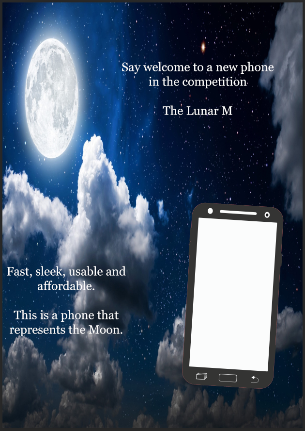

On this page you will find the work I did for Unit 6 of my course which is Digital Graphics. This unit is where I learned how to create computer graphics. Finished work will be shown here to give an example of what I have done.
Here are some screenshots of the work that was done.
